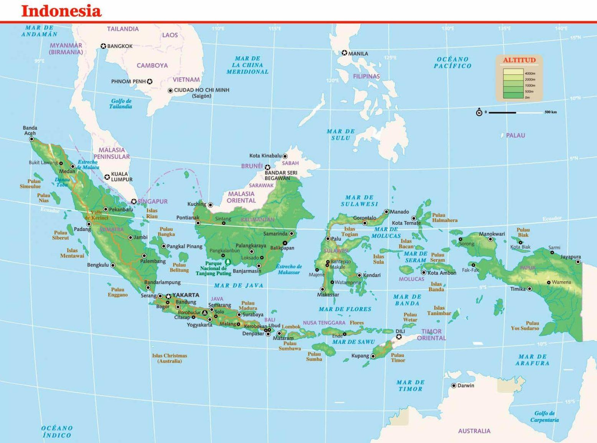
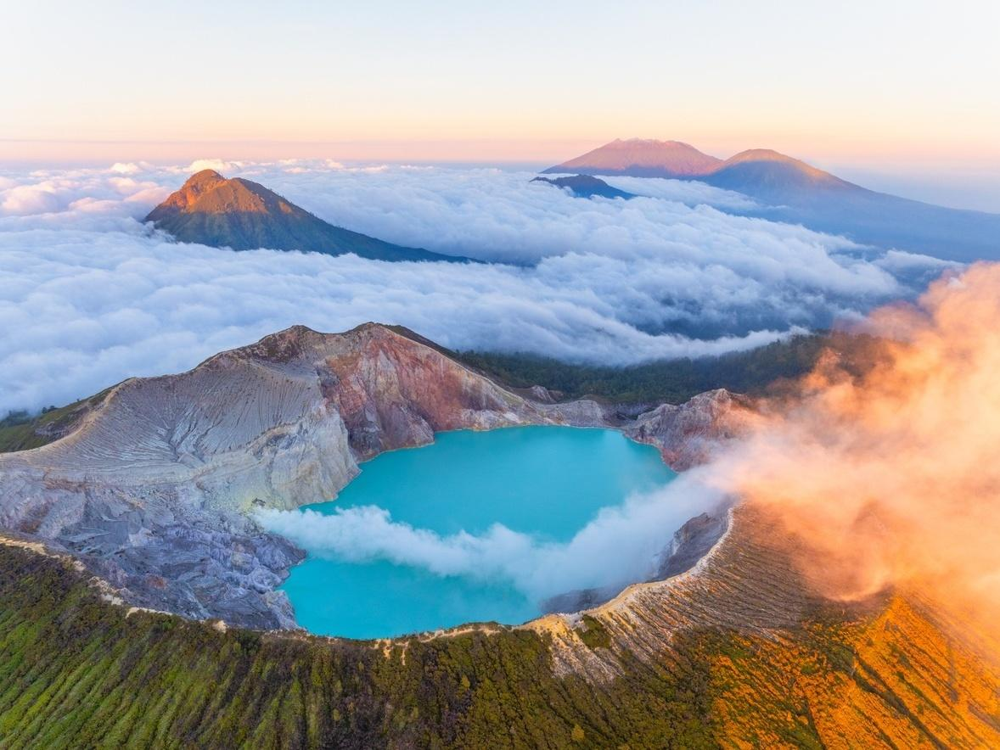
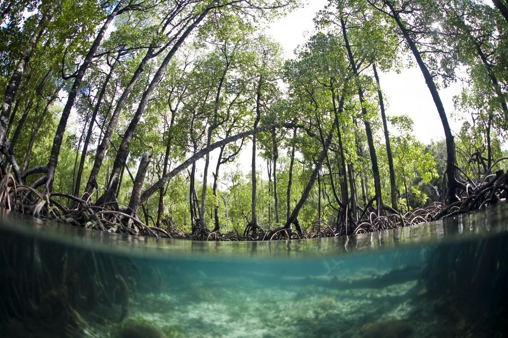

A Indonésia é um vasto arquipélago localizado no Sudeste Asiático, composto por mais de 17 mil ilhas distribuídas entre os oceanos Índico e Pacífico.
Sua posição geográfica é estratégica, situando-se entre os continentes asiático e australiano, o que contribui para sua grande diversidade natural e cultural.
O território indonésio é marcado por intenso dinamismo geológico, pois está localizado no chamado “Anel de Fogo do Pacífico”,uma área com forte atividade sísmica e vulcânica. Por isso, o país possui centenas de vulcões, muitos deles ainda ativos.
O relevo é predominantemente montanhoso em diversas ilhas, com destaque para cadeias vulcânicas e áreas de floresta tropical densa.
Além disso, há extensas planícies costeiras que favorecem a ocupação humana e atividades agrícolas.
O clima da Indonésia é equatorial, caracterizado por altas temperaturas e elevada umidade ao longo de todo o ano, com duas estações bem definidas: a estação chuvosa e a estação seca.
A vegetação é composta principalmente por florestas tropicais, que abrigam uma das maiores biodiversidades do planeta, incluindo diversas espécies endêmicas.
Essa combinação de fatores naturais torna a Indonésia um dos países mais ricos em diversidade geográfica do mundo, ao mesmo tempo em que enfrenta desafios relacionados a desastres
naturais e preservação ambiental.

arquipélago (milhares de ilhas)

vulcões ativos (Anel de Fogo)

florestas tropicais